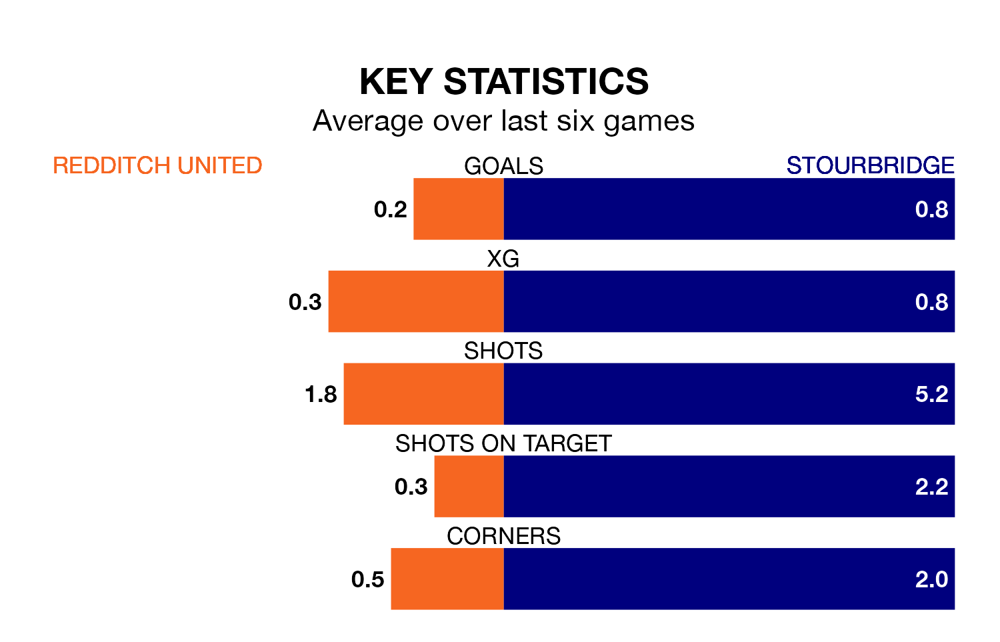

Redditch United welcome Stourbridge to the Valley Stadium on Monday looking to pick up points to end their five-game losing streak.
Redditch's struggles have left them with just three points from their last six Southern League Premier – Central matches, while their opponents have earned six from a possible 18.
In the last 10 years, Redditch and Stourbridge have played each other on nine occasions. Redditch won three of them and Stourbridge six.
On average, Redditch scored 0.8 goals and Stourbridge 1.9 in those matches.
Their last meeting was on January 1, when Redditch won 1-0 away.
With 45 goals in 33 games so far this season, Stourbridge are scoring at below the league average rate with 1.4 goals per game. But they are conceding fewer than average too, letting in 44 goals at a rate of 1.3 per game.
Redditch are also below average scorers, with 1.4 goals per game, compared to a league average of 1.5. They have also conceded 1.4 goals per game.
United are sixth in the table after 36 games, of which they have won 18 and drawn six, earning 60 points.
The visitors are 11 places behind the home side in 17th, with 11 wins and seven draws putting them on 40 points.
Redditch's last match was on Friday, a 3-0 loss against AFC Telford United.
Stourbridge lost 1-0 against Stratford Town last time out, on Saturday.
Updated: 10:31 (UTC), 31/03/24